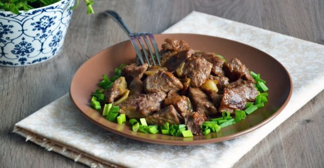

Bear meat stewed in beer

Description
Bear meat is quite rare and expensive. But it is quite suitable for use. People used to eat it often, and in the northern regions game still occupies an important place in the diet. The product is used to make winter preparations - a large amount of meat can not be consumed at once.
Cooking bear meat is more difficult than usual. The meat is very tough and not suitable for fresh frying at all. Usually bear meat is stewed or baked in the oven, pre-treated with vinegar to soften. There are several popular recipes for preparing the product.
Ingredients
To prepare a savory and aromatic dish, you will need the following ingredients:
- 1 kg bear meat
- 2 onions
- 1 liter of beer
- 1 bunch parsley
- 1/2 cup wine vinegar
- a pinch of cumin
- 2 carrots
- 4 tbsp flour
- 4 cloves of garlic
- 1 tbsp sugar
- salt to taste
Steps
- Dilute the wine vinegar with 500 ml of water
- Chop the meat into pieces
- Place the meat in the diluted wine vinegar for 12 hours
- After 12 hours remove the meat from the wine vinegar
- Pat it dry with a clean cloth
- Cut the onion into cubes
- Cut the carrots into small pieces
- Rub the meat with salt and spices
- Bake in a pan for at least 40 minutes
- Pour the beer over the meat
- Add the sugar and flour and mix
- Stew under the lid for about 20 minutes
- Add the vegetables and simmer on a low heat for another 2.5 hours
Back to overview